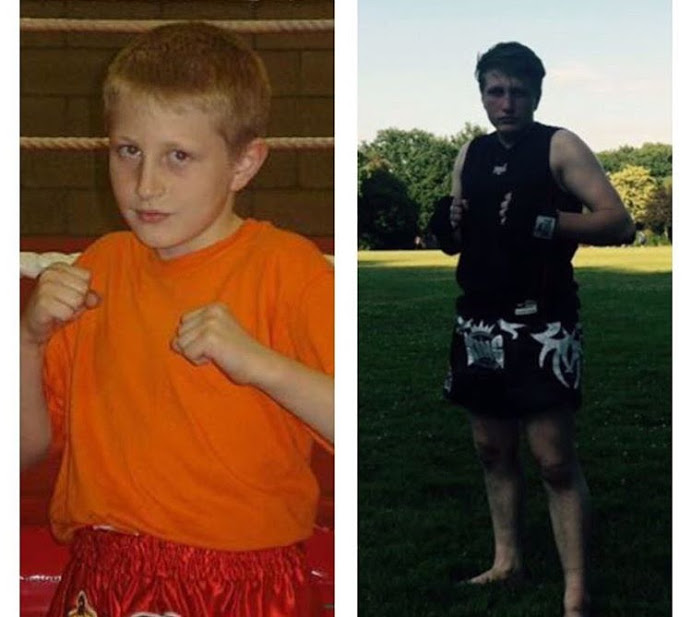
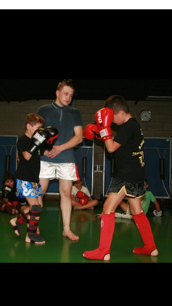

Muay Thai

Wat is Muay Thai
-
Thaiboksen (Thai: muay Thai) is een oude vechtsport die al eeuwen in Thailand wordt beoefend. Het thaiboksen is niet enkel meer in Thailand populair, maar over de hele wereld wordt deze sport actief beoefend. Het huidige muay Thai is indirect afkomstig uit de gewapende vechtkunst krabi krabong. Wanneer een krabi krabong-vechter zijn wapens niet meer had, kon hij zijn acht lichaamsdelen als dodelijke wapens gebruiken; deze stijl wordt muay boran genoemd. Vanuit het dodelijke muay boran (oude boksen) is het huidige wedstrijd gerichte muay Thai ontstaan. Veel muay boran technieken zijn niet meer toegestaan tijdens wedstrijden omdat deze gewoonweg te dodelijk zijn.(WIKIPEDIA)
